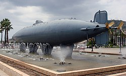

Descripcion
Una de las primeras cosas que puedes hacer al llegar a la ciudad en coche es parar en una rotonda del Paseo de Alfonso XIII para ver una réplica del Submarino Peral, diseñado por Isaac Peral, que se propulsaba por medio de la energía eléctrica y fue el primero de funcionalidad militar de la historia. Ten en cuenta que el original está en el Museo Naval, una visita que es una de mejores cosas que hacer en Cartagena además de gratuita, sobre todo si te gusta el tema de la navegación y quieres tener más información sobre la historia naval de la armada española en la ciudad y el submarino. Una buena forma de conocer las piezas más importantes de este museo es reservar esta visita guiada con un experto que incluye un paseo en barco por la bahía de Cartagena.
